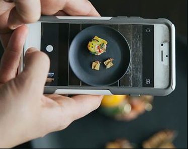
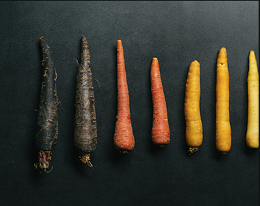

Taste the colours
Red
Red foods remind us of berries and soft fruits, so we anticipate a sweet taste.
Green
Fresh, zingy green colours are reminiscent of unripe fruit, promising sour or acid flavours
White
White foods evoke memories of salt and salty flavours, driving the expectation of a savoury treat.


Taste: A Five-Sense Experience
Our visual senses provide up to 28% of our taste experience. This is a theory Instagram chef Jacques la Merde takes to the extreme. Serving up exquisite tasting plates
- in fact made from gas station ingredients
- to her thousands of followers, she demonstrates how visual techniques affect our perception of food.